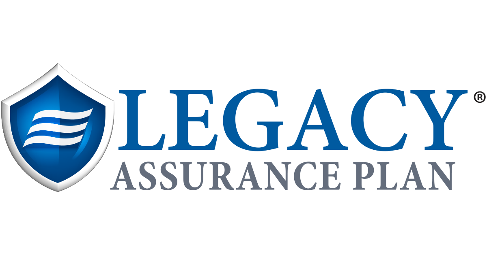

Bathroom Consulting
Guidance on products, materials, design choices, realistic expectations, project scope and the questions to ask before signing a contract.
View Renovation StoriesStern Roots Solutions
Trusted guidance for the home you're creating, the decisions you're making, and the future you're building.
Some decisions are simply too important to make without the right information.
Whether you're considering a bathroom renovation, trying to understand the true cost of improving a home, or thinking about how to protect what you've worked hard to build, Stern Roots Solutions helps you understand your options, ask better questions, and move forward with confidence.
Meet Tracie
Tracie Stern's career has never followed a conventional path. A native Canadian, she moved to the U.S. after signing with Elite Model Management, beginning a two-decade career spanning fashion, television, film and production.
Her next chapter took her into real estate investing, renovation and construction. She graduated from a Building & Construction Trades program in Hampton Roads and later returned as its first female instructor and Program Coordinator. Her career expanded into the home-improvement industry, where she worked across nearly every part of the homeowner journey—from design and renovation planning to sales, marketing, customer experience and market development.
More recently, Tracie's work with Legacy Assurance Plan introduced another side of homeownership: what happens to everything you've worked so hard to build. Helping families think about their homes, assets and future reinforced something her career had already taught her again and again:
The right information can change the decisions we make.
Today, Stern Roots Solutions brings those experiences together. Tracie helps people ask better questions, understand their options and make more informed decisions about their homes and their future—whether they're buying, renovating, planning ahead or simply trying to figure out what comes next.
She is also the entrepreneur behind Single™, another Stern Roots Solutions venture built around that same idea: giving people better information, resources and support to navigate important decisions in their lives.
Mother of two. Published writer. Builder. Entrepreneur. And a firm believer that some of the most interesting chapters begin by asking, “What's next?”
Protecting Homes
Renovation decisions can become expensive quickly. Stern Roots Solutions provides independent, practical guidance so you can better understand your options, your project and the questions worth asking before you commit.
Guidance on products, materials, design choices, realistic expectations, project scope and the questions to ask before signing a contract.
View Renovation StoriesPractical guidance for homeowners and homebuyers thinking through layouts, materials, renovation scope, priorities, proposals and costs before committing to a project or property.
View Renovation StoriesGuidance and resources to help you better understand how to protect your home, assets and wishes as part of your long-term legacy planning.

Learn More About Legacy PlanningSome ideas begin by seeing a need and deciding to build something better. Tracie is currently developing Single™, a new platform designed to give single adults better information, resources and support for navigating life, connection and what comes next.
Learn More About Single™Start a Conversation
Homes. Financial security. Independence. Reinvention. Legacy. Building something new.
They may look like very different parts of life, but they share something important: better information creates better decisions. That's what Stern Roots Solutions is here to provide.
Whether you're planning a renovation, protecting what you've built, interested in Single™, or simply aren't sure where to begin, start with a conversation.